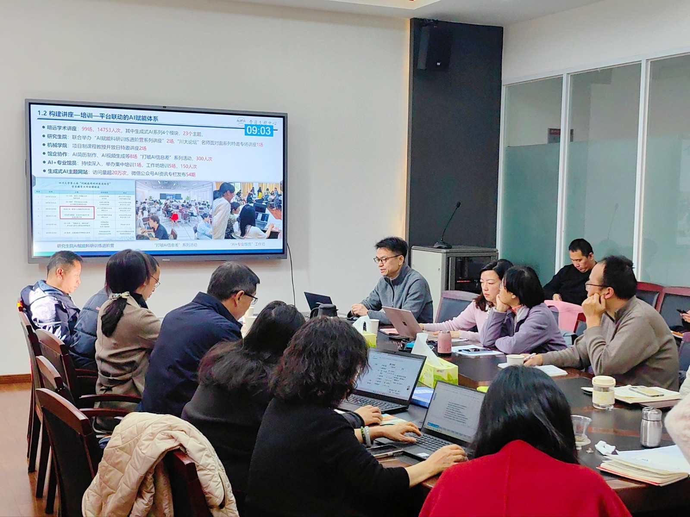

学院通知 · 科研创新
凝心聚力共谋发展新篇——图书馆召开2025年度各中心（室） 工作总结汇报会
发布时间：2026-01-16 00:00:00
2026年1月15日，四川大学图书馆2025年度各中心（室）工作总结汇报会在工学图书馆五楼会议室举行。图书馆全体领导班子成员、各中心（室）主任及副主任参加会议。会议由图书馆党委书记秦远清主持。 秦远清在开场讲话中指出，各中心（室）年度工作总结汇报会是图书馆强化战略谋划、促进协同联动、汇聚发展共识的重要平台，既是对2025年工作的系统回顾，也是谋划2026年发展思路的重要举措。他强调，全馆要以此次会议为契机，进一步增强部门协作，凝聚发展合力，在服务学校“双一流”建设中彰显图书馆的担当与作为。 会上，各中心（室）负责人围绕2025年度重点任务，依次汇报了本部门工作。汇报内容紧扣年度目标，通过数据、案例和成效展现了各部门在党建引领、业务发展、服务提升等方面的进展与亮点，同时也客观分析了当前存在的问题与挑战。各部门还就跨部门协作、智慧服务升级、服务品牌塑造等议题交流了思考与计划。分管馆领导分别对汇报情况进行点评，并就2026年工作提出了指导性意见。 馆长兰利琼在总结讲话中充分肯定了各中心（室）2025年取得的工作成绩。她表示，全馆上下团结一心、扎实工作，在党建引领、服务创新、影响力提升等方面成效显著，尤其是在全国高校图书馆评价中实现了稳步前进。面向未来，她强调，图书馆要进一步强化协同机制，整合优势、提升效能，在支撑人才培养、助力科学研究、强化社会服务、推动文化传承等方面打造品牌，全面提升川大图书馆的综合影响力。 秦远清在会议最后强调，全体馆员要继续秉持“团结协作、尊重沟通、自加压力、负重前进”的精神状态，持续深化“组团式服务”进学院，加强图书馆组织文化建设，不断提升服务品质与工作效率。本次会议进一步统一了思想提高了认识、明确了努力方向、凝聚了奋进力量，为图书馆扎实推进2026年各项工作、助力“十五五”事业发展奠定了坚实基础。 撰稿：党政办公室 刘光辉 摄影：党政办公室 肖敏 文献服务中心 淳姣
